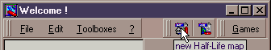
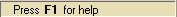
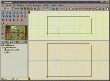
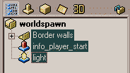
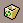
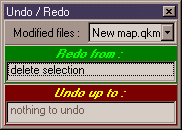
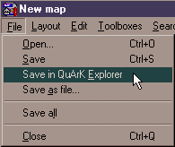

Starting the map-editor
Updated 25 Jul 2009
- QuArK Information Base
- 2. Map editing
- 2.1. Tutorial - Creating a map
|
|
Starting the map-editor
Updated 25 Jul 2009
|
Upper levels: - QuArK Information Base - 2. Map editing - 2.1. Tutorial - Creating a map |
|
2.1.1. Starting the map-editor |
[ - - ] |
This is the first part of four, which guides you through the methods and functions of creating a map in QuArK's map-editor. Once you've completed this section, proceed to 'Using brushes (polyhedrons)'. |
|
Index |
|
Entering the map-editor |
Decker - 25 Jul 2009 | [ Top ] |
|
Before we start, make sure that the build-programs are configured properly in the 'Games' section.  You start the QuArK map-editor, by first selecting what game you want to develop for, in the 'Games' menu. For this tutorial, the game 'Half-Life' has been choosen. Then press the 'New map' icon as shown in the image, to start the map-editor. |
|
Help in the map-editor |
Decker - 12 Sep 2008 | [ Top ] |
|
Before you proceed, you should be aware of the help you can get in QuArK. Where ever you point your mouse-cursor in QuArK's map-editor, you might get a "Press F1 for help" message in the bottom leftcorner of the screen, like this: . If you don't know about the item you are pointing at, then press the F1 key and you will get a help-box up, explaining a little about the item. |
|
The default room |
Decker - 25 Jul 2009 | [ Top ] |
|
 When you start the map-editor using the icon described, a default room will be presented for you. This you can use to test to see if the build-programs works, by issuing a QuickGO! from the game menu; which is either Quake-1, Hexen-II, Quake-2, Heretic-II, Half-Life, etc., depending on what you have selected in the QuArK-explorer games menu. If you have any problems calling the build-programs, first check the 'Basic knowledge - A must know for people using QuArK', next the Configuration then the 'FAQs for each supported game' and lastly if you simply can't get it to work, mail your problem to the QuArK-forum; stating for what game you are developing, and a good description of your problem. There are different views and panels in the map-editor, each with their function, which you will be presented to, through this tutorial. You can also check the map-editor reference pages, if you can't wait. |
|
Deleting the default room |
Decker - 28 Feb 2001 | [ Top ] |
|
 The default room is okay for test purposes, but usually you don't want to use it at all, so how do you get rid of it? Easy, by deleting it! Mark the three items in the 'Tree-view (hierarchy-view)', as shown in the image, and either press the Delete key on your keyboard, or drag them to the trashcan icon  and drop . You must not, and can not, delete the 'worldspawn' item. This must exist in all maps. To select multiple items, QuArK's tree-view understands the common method as every other Windows' program do. By holding down the Ctrl key on your keyboard, and click on items will toggle between selected and unselected. (Just like in Windows' File-Explorer.) You can also select the first item of a list, then hold down the Shift key and click on the last item, all items in between will be selected. (Just like in Windows' File-Explorer.) |
|
Undo/Redo |
Decker - 12 Sep 2008 | [ Top ] |
|
 Before moving on, let's look at the undo/redo facility in QuArK. This would be a good time to test it, as we are experimenting deleting the default room. You activate the undo/redo window, by either clicking on the icon , or from the Edit menu select Undo/Redo... In this window, you can see what QuArK allows you to undo and/or redo. You can not do a selective undo or redo, so it's better to get some knowledge about how it works. There is also a limit on how much thats available to undo/redo, see 'Memory'. Try to undo your 'delete selection'. Now the default room and all came back again. You can then redo the 'delete selection'. Try it. Try to experiment with deleting all items, one item at a time, from the tree-view, and then open the undo/redo window. Remember to look at the shortcut keys in the menus ('Ctrl+...' and 'Shift+...') and in 'Keys'. Using these will not only give you a faster work-flow, but also reduce the risk of getting physical-disabilities due to using the mouse too much. |
|
Saving your map in a QuArK project |
Decker - 12 Sep 2008 | [ Top ] |
|
 Saving your work often is also a good idea. There are several ways to do this. When you first start a new map, you should save it using the Save in QuArK Explorer . This will create a new entry in your QuArK project (.QRK), so you can keep multiple versions of the same map, in one project file. You can also choose to save it as a QuArK map-file (.QKM), but then it's only one map per file. The last option, is to save it as a .MAP file. However this is not advisable when using QuArK, because you loose all the neat information that is stored in the tree-view, like; groups, duplicators, negative brushes, shared faces, etc. Only save as a .MAP file, if you want others to look at your work, and they use another map-editor than QuArK. Try using the Save in QuArK Explorer a few times. Notice that you will be brought back to the QuArK explorer when using this, so you can see that a new entry is added to your project. You can rename the entries by slowly double-clicking on them, or press the F2 key (Just like in Windows' File-Explorer.) Also when saving to the QuArK explorer, you then have to save your project there. |
|
Next part |
Decker - 31 Aug 2008 | [ Top ] |
|
Once you've completed this section, proceed to 'Using brushes (polyhedrons)'. |
|
Copyright (c) 2009, GNU General Public License by The QuArK (Quake Army Knife) Community - http://quark.sourceforge.net/ |
[ - Top - ] |